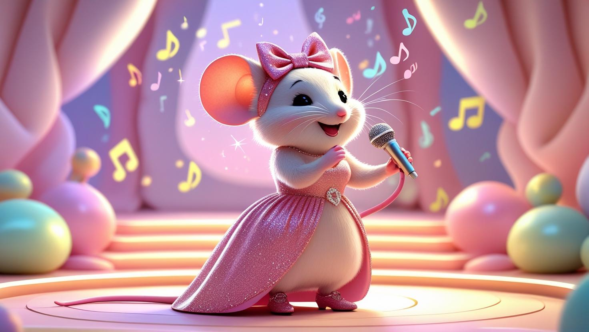

🌟 ¡El gran momento ha llegado! ¡Luces, música, y emoción! 💖
¡La gran noche de Kira!
🌙 La noche llegó y las alcantarillas se llenaron de luz. Globos, flores y luces de colores transformaron el gran salón, que se llenaba de animalitos ansiosos por el espectáculo.
Periquito, nervioso y feliz, corría ajustando los últimos detalles. En su camerino, Kira respiraba hondo. De pronto, las luces se apagaron, y un hilo musical comenzó a sonar suavemente...
Una voz hermosa llenó el silencio. Cuando las luces se encendieron, ¡ahí estaba Kira, radiante en el centro del escenario!
Kira comenzó a cantar su canción más bonita. La emoción fue tan grande que algunos soltaron lágrimas de alegría. Otros gritaban: —¡Bravo, Kira! —¡Qué hermosa! —¡Cantas como un ángel! Y así, comenzó una noche mágica… ¡La noche en que una pequeña ratita cumplió su gran sueño! 🌹
🎶 **¡La Primera Nota!** 🎶
✨ El espectáculo continúa... ¡No te lo pierdas! ✨
(Haz clic para descubrir más)
Escuchar cuento